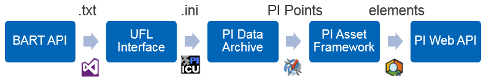

Back-End
- All the back-end parts are in a virtual machine named BARTPROJECT, and the computuer is named dyangbart
- Open BARTProject_DY (the SLN file) in Visual Studio and run it
- Open PI Interface Configuration Utility and run the UFL interface, using the BART API.ini file
- To check, the attributes of the stations should be updating in PI System Explorer (the asset server is DYANG6220 and database is BART)
Front-End
- Have the project folder, BART Web App, in C:/
- If it's your first time running the web app on your machine, install Node.js from https://nodejs.org/en/download/
- To start the web app, type "cd /d C:\BART Web App" into command prompt
- If it's your first time running the web app on your machine, type "npm install"
- After, type "npm start"
- Skip steps 2 and 4 if you want to run this program again
A flowchart of the backend structure is shown below:

- Using a console application, queries are sent to the BART API every few seconds to retrieve the estimated
arrival time and the number of cars and packages it in a .txt file.
- The .txt files are stored in a folder and the UFL interface scans the folder every five seconds and parses
the information to store it into PI.
- The PI Points are organized based on train and line using the Asset Framework.
- PI Web API is linked with the server to make retrieving the desired information more manageable.
A flowchart of the frontend structure, located in the BART Web App/dev folder, is shown below:
- view.component.ts is in charge of routing the web app and the about page
- about.component.ts is responsible for loading this page
- about.component.html is responsible for displaying the contents of this page
- app.component.ts is responsible for loading the web app
- app.component.html is responsible for displaying the contents of the web app
- data-query.component.ts is responsible for querying and retrieving the data in the sidebar
- table-query.component.ts is responsible for querying and retrieving the data in the table
- station-query.component.ts is responsible for querying and retrieving the station names and destinations in the server
- form.component.ts is responsible for loading and displaying the form in the sidebar
- image.component.ts is responsible for loading the images in the dashboard
- map.component.ts is responsible for querying the Google Maps API to load the map
- station.ts is responsible for declaring the station class
- boot.ts is responsible for bootstrapping
- Make the sidebar of this page clickable
- Have the web app constantly search the PI Web API for updated times
- Incorporate a notification system using PI Notifications to let the user know when to leave the office
- Use the Google Maps API to find the time requierd to get to the station
- Run the back-end console application as a service
- Make front-end an acutal application that you can install on a computer
- "Fix" the Submit button such that it can be clicked multiple times if a new station is selected
- Decrease the loading time
- Occasionally, if you select the station but don't change the destination and click submit, there is an error probably because of the asynchrous querying of the PI Web API
- Occasionally, the Google Maps display does not work